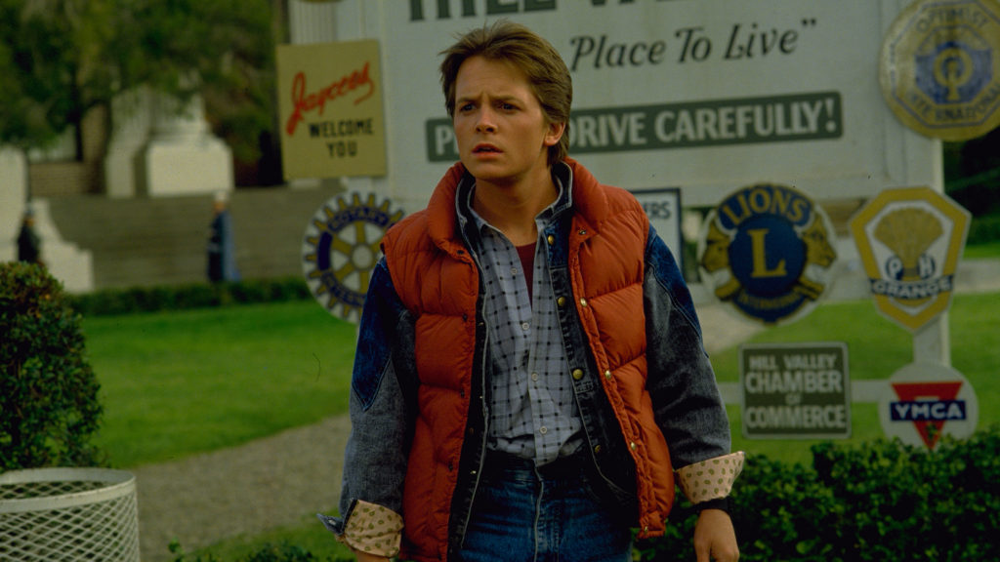

35:48 · 5 OPERE
Perché tre rettrici non sanno più riconoscere il confine etico tra giusto e sbagliato?
Il filo del discorso
La domanda che guida il contributo è perché le responsabili di tre università americane abbiano risposto in modo condizionale a una domanda sull’invocazione del genocidio degli ebrei nei campus. Dr Divago prende l’audizione congressuale di Harvard, Pennsylvania e MIT come segno di una crisi del giudizio morale e ne cerca le radici nella sofistica, nel relativismo e in alcune letture moderne di Nietzsche. La premessa invita però anche alla prudenza nel giudicare il presente: attraverso Il profeta di Dino Risi e la storia italiana del secondo Novecento, il relatore distingue la rappresentazione pubblica dagli eventi e dalle responsabilità che possono emergere più tardi. Questa cautela non impedisce al discorso di formulare accuse e generalizzazioni, che la scheda mantiene attribuite e contestualizza. Le controversie sulla produzione scientifica di Claudine Gay e sull’incarico residenziale di Ronald Sullivan sono separate dai fatti documentati e dalle rispettive interpretazioni. Il centro filosofico è una difesa della responsabilità personale: comprendere le circostanze, sostiene il relatore, non deve cancellare la scelta né rendere accettabili genocidio o violenza sessuale. Il racconto di Caino e Abele fornisce il modello teologico di una coscienza morale presente nell’essere umano e approfondita dalla cultura. Il finale riconduce la crisi delle istituzioni alla perdita di un orientamento etico e si chiude con il Giulio Cesare di Shakespeare. Le note distinguono la condanna morale della violenza dall’applicazione di regole disciplinari e giuridiche, correggono la data dell’audizione e non presentano un’unica genealogia filosofica come spiegazione dimostrata del comportamento delle tre presidenti.
I libri nel discorso
Il profeta
Locandina del film Il profeta: Locandina italiana del film del 1968, produzione Fair Film e distribuzione Titanus.
Locandina autentica del film, non copertina di un libro; immagine integrale controllata e crediti riscontrati nel catalogo cinematografico.
Il profeta, film del 1968 con Vittorio Gassman, esplicito; Dino Risi confermato dai crediti ufficiali.
Passaggio 0:38 ↗ · Fonti e libro ↗
Ritorno al futuro (Back to the Future)
Fotografia promozionale di Ritorno al futuro: Fotografia promozionale del film del 1985, archivio del produttore Amblin.
Fotografia promozionale ufficiale, non locandina né copertina editoriale; la provenienza è il sito del produttore Amblin.
Back to the Future e Ritorno al futuro espliciti; descritta la scena del primo film con Doc e il riferimento a Ronald Reagan.
Passaggio 18:58 ↗ · Fonti e libro ↗
Genesi
Copertina: Einaudi, I libri della Bibbia / Einaudi Tascabili, 2000; introduzione di Steven Rose
Copertina dell’edizione autonoma Genesi, nella serie I libri della Bibbia, con introduzione di Steven Rose. Edizione scelta come riferimento iconografico; nessuna edizione è confermata nel video.
Genesi e racconto di Caino e Abele espliciti, con interpretazione della creazione di Adamo; capitoli di riferimento 4 e 2.
Passaggio 28:28 ↗ · Fonti e libro ↗
Vangelo secondo Matteo
Identificazione probabile
Copertina del volume completo: San Paolo, 2014 · Nuova Versione dai Testi Antichi · edizione di riferimento
Vangelo secondo Matteo è un libro della Bibbia. L’immagine mostra il volume completo San Paolo di riferimento, non un’edizione autonoma del singolo libro e non una versione identificata nella citazione.
Non praevalebunt e porte degli inferi: probabile allusione a Matteo 16,18; titolo non pronunciato e interpretazione morale del relatore.
Passaggio 33:58 ↗ · Fonti e libro ↗
Giulio Cesare
Copertina: Feltrinelli · Universale Economica I Classici · 2013
Copertina autentica dell’edizione di riferimento, non attribuita all’esemplare del video.
Shakespeare e Giulio Cesare espliciti; parafrasi del discorso di Antonio sul giudizio fuggito fra le bestie, III,2.
Passaggio 35:35 ↗ · Fonti e libro ↗